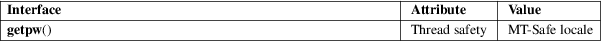

getpw − reconstruct password line entry
Standard C library (libc, −lc)
#define
_GNU_SOURCE /* See feature_test_macros(7) */
#include <sys/types.h>
#include <pwd.h>
[[deprecated]] int getpw(uid_t uid, char *buf);
The getpw() function reconstructs the password line entry for the given user ID uid in the buffer buf. The returned buffer contains a line of format
name:passwd:uid:gid:gecos:dir:shell
The passwd structure is defined in <pwd.h> as follows:
struct passwd {
char *pw_name; /* username */
char *pw_passwd; /* user password */
uid_t pw_uid; /* user ID */
gid_t pw_gid; /* group ID */
char *pw_gecos; /* user information */
char *pw_dir; /* home directory */
char *pw_shell; /* shell program */
};
For more information about the fields of this structure, see passwd(5).
The getpw() function returns 0 on success; on error, it returns −1, and errno is set to indicate the error.
If uid is not found in the password database, getpw() returns −1, sets errno to 0, and leaves buf unchanged.
0 or ENOENT
No user corresponding to uid.
|
EINVAL |
buf is NULL. |
|||
|
ENOMEM |
Insufficient memory to allocate passwd structure. |
/etc/passwd
password database file
For an explanation of the terms used in this section, see attributes(7).

None.
SVr2.
The getpw() function is dangerous as it may overflow the provided buffer buf. It is obsoleted by getpwuid(3).
endpwent(3), fgetpwent(3), getpwent(3), getpwnam(3), getpwuid(3), putpwent(3), setpwent(3), passwd(5)